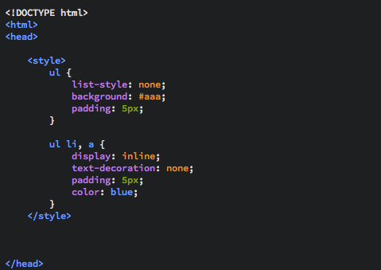

Navigation bars, such as the one at the top of this page, help the user navigate through the site. For example; on this site, and on this page in particular I have added three items on the 'nav bar', which are HTML, Home and Site Map. These three are three important links to help you find you way around the site with ease, saving you the hastle of going back in history or typing the URL out.
The key to a good navigation bar is styling, so in this tutorial I will show a little CSS. Also, most navigation bars use lists, which we have already covered. To refresh, here is an example of a list tag: <ul></ul>. Click on lists again if you require more information.
Firstly, lets create an unordered list with anchor tags in, something like this (feel free to copy and paste):
<ul>As shown above, this creates a list of three items. The <a href="#"> tags turn a simple list into a navigation list, the '#' in the href attribute just links to this page, making the text clickable.
Next we want to remove the defualt styling of bullet points and create a single horizontal navigation bar. I will do this using <style></style> tags and a little CSS. I will also provide the code and explain each line.
Add some <style></style> tags to the <head> section of your HTML document, like shown below.
Finally, copy out the code inside the <style></style> tags to format your navigation bar, the end result should look something like this:
The <style></style> tags allow you to add CSS styling to elements in the document without referencing using link tags. This will be the only time we do this, when you move onto CSS lessons we will be using <link> tags to add styling to one or more documents.
The first block of code styles the <ul> tag. This is done by first writing ul {}, to select all <ul> tags, then adding code inside the curly braces to style the selected tag. list-style: none; removes the list styling (bullet points). background: #aaa sets the background colour to 'aaa' HEX. padding: 5px; adds spacing inside the list.
The next block of code styles the <li> and <a> tags. These are the actual list (now navigation) items. display: inline; is important - it causes the lists to be displayed in a single line, each item next to the previous one. Since the list is small they should all fit on a single line; though this does depend on your browsers width. The text-decoration: none; removes the underline and colouring from the anchor tag text, so that the links look more like buttons. padding: 5px; was covered in the previous block, but here it just adds to the illusion of making the links (<a>) tags look more like buttons. Finally, the color: blue; sets the text colour of the links to blue to make it stand out from the gray background.